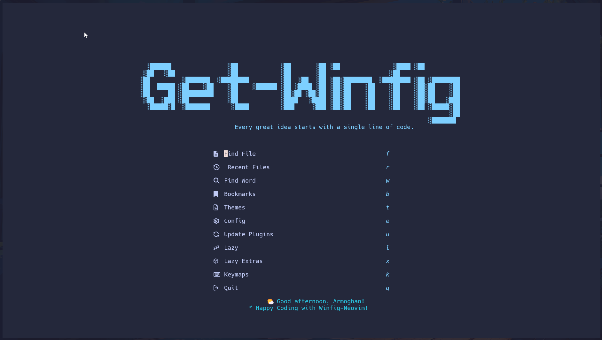

Winfig Neovim: Terminal Based Editor

Overview¶
The Winfig Neovim module provides a comprehensive setup for Neovim on Windows 11, tailored for both personal and enterprise development environments. This module ensures that Neovim is configured with essential plugins, settings, and themes to enhance productivity and streamline the coding experience.
Features¶
- Lazy vim: A modern Neovim configuration framework that simplifies plugin management and configuration.
- Pre-configured Plugins: Includes popular plugins for code completion, syntax highlighting, file navigation, and more.
- Custom Keybindings: Optimized keybindings for efficient navigation and editing.
- Theming: Aesthetic themes and color schemes for a visually appealing coding environment.
- Cross-Platform Compatibility: Configurations that work seamlessly across different operating systems.
- Enterprise Ready: Settings and plugins that cater to enterprise development needs, including version control and collaboration tools.
Requirements¶
- Windows Terminal Modern terminal for Windows
- Git Version control system
- Administrator privileges Required for certain configurations
- Internet access For downloading dependencies
- Nerd Fonts (FiraCode) Enhanced terminal appearance (see Nerd Fonts site for more options)
- tree-sitter-cli & a C compiler For advanced syntax highlighting (optional but recommended)
- curl For blink.cmp completion engine
- lazygit Terminal Git UI
- For fzf-lua:
Quick Install
- Windows Terminal:
winget install --id Microsoft.WindowsTerminal -e - Git:
winget install --id Git.Git -e - Nerd Fonts: Download from Nerd Fonts and install your favorite patched font
Installation Methods¶
One-line installation - Downloads and runs automatically:
Invoke-RestMethod -useb https://raw.githubusercontent.com/Get-Winfig/winfig-nvim/main/setup.ps1 | Invoke-Expression
Why Web Install?
- Always gets the latest version
- No manual download required
- Automatic script verification

Download and run manually for offline environments:
Set-ExecutionPolicy RemoteSigned -Scope CurrentUser
# Download from GitHub
Invoke-WebRequest -useb "https://raw.githubusercontent.com/Get-Winfig/winfig-nvim/main/setup.ps1" -OutFile "setup.ps1"
Unblock-File -Path .\setup.ps1
.\setup.ps1
Note
- Ensure you have the latest script version
- Manual updates required for new releases
- Verify script integrity before running

Step-by-step manual setup for full control:
- Install Prerequisites: Ensure all requirements are met (see Requirements).
-
Clone Configuration: Clone the Winfig Neovim configuration repository:
git clone https://github.com/Get-Winfig/winfig-nvim.git $env:LOCALAPPDATA\nvimgit clone https://github.com/Get-Winfig/winfig-nvim.git ~/.config/nvim
Post-Installation¶
- Launch Neovim: Open Neovim to trigger plugin installation and configuration setup.
- Install Plugins: Follow on-screen prompts to install necessary plugins.
- Customize Keybinds: Modify
lua/config/keybinds.luaand other configuration files as needed. - Configure Settings: Adjust Neovim settings in
lua/config/options.luato your liking. - Set Up Language Servers: Install and configure language servers for your preferred programming languages.
- Explore Features: Familiarize yourself with the pre-configured plugins and features.
- Enjoy Coding: Start coding with your newly configured Neovim environment!
¶
Keybindings¶
Winfig Neovim uses LazyVim as its base configuration, which comes with a set of default keybindings. Below are the custom keybindings added by Winfig Neovim:
General Editing¶
| Keybinding | Description | Mode |
|---|---|---|
| Space | Leader Key | Normal, Visual |
| ; | Enter command mode | Normal |
| Esc | Clear search highlights | Normal |
| Ctrl+f | Search and replace with confirmation | Normal |
| Ctrl+r | Search and replace all occurrences | Normal |
| Ctrl+F | Find word under cursor | Normal |
| Ctrl+Alt+f | Find word under cursor in all files | Normal |
| Ctrl+z | Undo last action | Normal |
| Ctrl+y | Redo last undone action | Normal |
| Ctrl+a | Select all text in the file | Normal |
| Ctrl+c | Copy selection to clipboard | Normal, Visual |
| Ctrl+x | Cut selection to clipboard | Normal, Visual |
| Ctrl+v | Paste from clipboard | Normal, Visual |
| Alt+j | Move line/selected text down | Normal, Visual |
| Alt+k | Move line/selected text up | Normal, Visual |
Buffer, Window, and Tab Management¶
| Keybinding | Description | Mode |
|---|---|---|
| Ctrl+w+l | Toggle line wrapping | Normal |
| Alt+Tab | Switch to the next tab | Normal |
| Alt+1 | Open a new tab | Normal |
| Alt+q | Close the current tab | Normal |
| Alt+2 | Open new vertical split | Normal |
| Alt+3 | Open new horizontal split | Normal |
| Shift+q | Close the active pane | Normal |
| Ctrl+o | Open file in current directory | Normal |
| Ctrl+s | Save file | Normal |
| Ctrl+q | Quit Neovim | Normal |
| Ctrl+Shift+q | Quit without saving | Normal |
| Ctrl+h | Move focus to the left window | Normal |
| Ctrl+l | Move focus to the right window | Normal |
| Ctrl+j | Move focus to the lower window | Normal |
| Ctrl+k | Move focus to the upper window | Normal |
| Ctrl+n | Next buffer | Normal |
| Ctrl+p | Previous buffer | Normal |
| Alt+z | Toggle Line Wrap | Normal |
Plugin & Feature Shortcuts¶
| Keybinding | Description | Mode |
|---|---|---|
| Leader+T | Color Themes Selection | Normal |
| Leader+G | Toggle Tagbar | Normal |
| Leader+/ | Toggle Comment | Normal |
| Leader+mp | Toggle Markdown Preview | Normal |
Git & Lazygit¶
| Keybinding | Description | Mode |
|---|---|---|
| Leader+gp | Git Push | Normal |
| Leader+gs | Git Status | Normal |
| Leader+gu | Git Pull | Normal |
| Leader+gd | Git Diff File | Normal |
| Leader+gz | Git Stash | Normal |
| Leader+ga | Git Add All | Normal |
| Leader+gc | Git Commit | Normal |
| Leader+gb | Git Branch | Normal |
| Leader+gx | Create New Git Branch | Normal |
| Leader+go | Checkout Git Branch | Normal |
| Leader+gm | Git Merge | Normal |
| Leader+gi | Initialize Git Repo | Normal |
| Leader+gg | LazyGit | Normal |
| Leader+gf | LazyGit Current File | Normal |
| Leader+gl | LazyGit View Logs | Normal |
Language/Project/Example¶
| Keybinding | Description | Mode |
|---|---|---|
| Leader+co | Typescript Organize Imports | Normal |
| Leader+cR | Typescript Rename File | Normal |
💡 Tip: You can further customize these keybindings in keymaps file!
Frequently Asked Questions (FAQ)¶
How do I update Winfig Neovim?
To update Winfig Neovim, you can pull the latest changes from the GitHub repository:
cd $env:LOCALAPPDATA\nvim
git pull origin main
cd ~/.config/nvim
git pull origin main
After pulling the latest changes, restart Neovim to apply the updates.
How do I add new plugins?
You can add new plugins by creating a new Lua file in the lua/plugins/ directory and specifying the plugin details. After adding the plugin, restart Neovim to install it.
Can I customize the theme?
Yes, you can customize the theme by modifying the theme settings in the lua/plugins/Themery.lua file. You can choose from various themes available in the LazyVim framework.
Where can I find the configuration files?
The configuration files are located in the following directory:
- Windows:
$env:LOCALAPPDATA\nvim - Linux / macOS:
~/.config/nvim - You can edit these files to customize settings, keybindings, and plugins.
Is there support for language servers?
Yes, Winfig Neovim supports Language Server Protocol (LSP) integration.
How do I report issues or contribute?
You can report issues or contribute to the Winfig Neovim project by visiting the GitHub repository.
What if I encounter issues during installation?
If you face any issues, please check the GitHub repository for troubleshooting tips or open an issue for assistance.
Troubleshooting Guide¶
If you encounter any issues while using Winfig Terminal, here are some common problems and their solutions:
| Issue | Solution |
|---|---|
| Neovim not launching | Ensure Neovim is installed and added to your system PATH. |
| Plugins not installing | Check your internet connection and try restarting Neovim. |
| Keybindings not working | Verify that the keybindings are correctly defined in the configuration files. |
| Theme not applying | Ensure the theme plugin is installed and configured correctly in the Themery.lua file. |
| Language server not functioning | Make sure the language server is installed and properly configured in the LSP settings. |
| Errors during startup | Check the Neovim log files for error messages and troubleshoot accordingly. |
| Performance issues | Disable unnecessary plugins or check for conflicting configurations. |
| Git integration not working | Ensure Git is installed and accessible from the command line. |
| Issues with specific plugins | Refer to the plugin documentation for troubleshooting steps. |